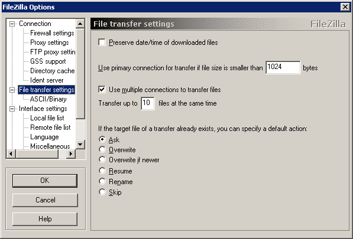

File transfer settings
Overview:
On the file transfer settings page and its subpages, you can modifiy the behaviour of FileZilla during file transfers.

Preserve date/time of downloaded files
By default, the creation time of a new file is the time it was created. Enable this feature if FileZilla should preserve the timestamp of a downloaded file. When enabled, the downloaded file has the same creation date/time as the file on the server.
Use multiple connections to transfer files
If enabled, FileZilla can transfer multiple
files at once and it is also possible to browse servers while transferring
files. The edit field below controls how many files can be transferred at the
same time.
If Use multiple connections is enabled, FileZilla opens a new connection
for each transfer. Disable this feature if you frequently connect to servers
which doesn't allow multiple connections and which may even ban you for trying
to establish multiple connection.
File exists settings
You can select the default action for transfers where the target files already exist. By default, FileZilla asks every time before overwriting a file.
Additional Settings
The File Transfer page has several subpages where you can configure other file transfer settings: